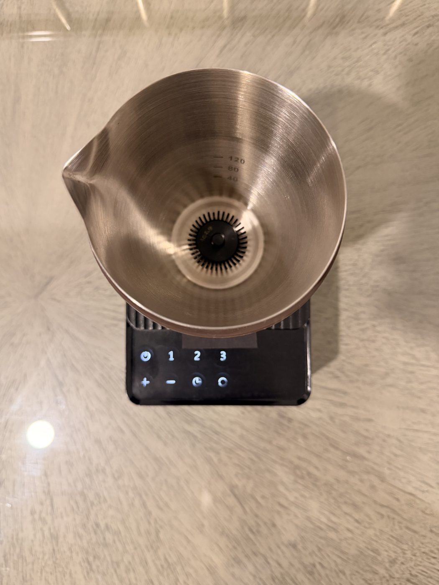

Classic usucha
You'll need: 2 g ceremonial matcha, 70 ml water at ~80°C.
Sift the matcha to the pitcher, pour water to the 80 ml line, set speed 1 and start. In twenty seconds, pour into a warmed bowl and drink while the foam is bright.
No chasen technique. No lumps. No standing over the bowl. Add your matcha, choose a speed and walk away — the sous chef whisks a perfectly smooth bowl in about twenty seconds, every time.
Everything the traditional ceremony asks of your wrist, refined into a single press.
Sift one to two scoops of matcha into the steel pitcher, then pour water or milk to the etched 40, 80 or 120 ml line. The markings take the measuring out of your morning.
Set the pitcher onto the powered base. The contactless magnetic drive finds the whisk on its own — no docking, no fuss, no parts to line up.
Tap speed 1, 2 or 3 on the backlit controls and let the built-in timer count down. One press to start — then step away and let go.
In about twenty seconds the whisk settles. Lift the pitcher and pour a smooth, foamy bowl straight from the drawn spout — hot or over ice.

3 speeds · built-in timerMatcha is not one drink. A delicate morning usucha, a daily bowl and a thick latte base each want a different hand. Matcha Sous translates that craft into three repeatable settings — so you dial in the texture instead of chasing it.
Three places to start — each one a tap away. The ritual guide in the box has more.
You'll need: 2 g ceremonial matcha, 70 ml water at ~80°C.
Sift the matcha to the pitcher, pour water to the 80 ml line, set speed 1 and start. In twenty seconds, pour into a warmed bowl and drink while the foam is bright.
You'll need: 2 g matcha, 40 ml water, milk, ice.
Whisk matcha and water on speed 3 for a thick base. Fill a glass with ice and cold milk, then pour the matcha over the top for clean emerald layers.
You'll need: 2 g matcha, 40 ml water, 150 ml warm milk.
Build a thick base on speed 3, then whisk in warm milk on speed 2 for a single, foamy pour. Café-grade latte art, without the espresso machine.
 Rinse · dry · ready
Rinse · dry · ready
There is no delicate chasen to reshape and no basket to scrub. Because the whisk is magnetic and the pitcher is seamless 304 stainless steel, cleanup is the easy part of the ritual.
Trade the whisk for the sous chef. Free express shipping, a 30-night trial and a 2-year warranty.